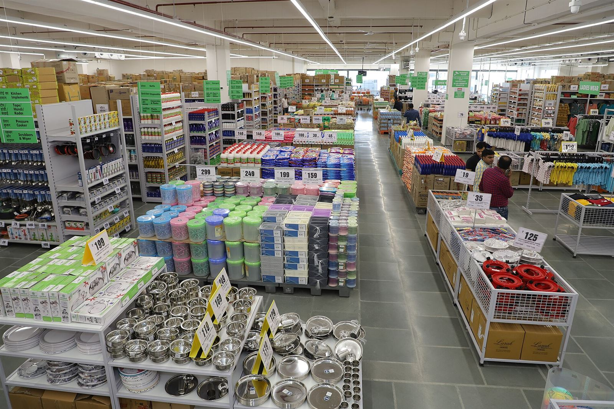

Un restaurante sin un sistema POS para restaurantes opera a ciegas: no sabe qué plato vende más, qué mesero rinde mejor, cuánto se pierde en la caja o si la cuenta que entregó el mesero coincide con lo que pagó el cliente.

En esta guía te explicamos todo sobre el sistema POS para restaurantes en Colombia: las funciones que realmente importan (control de mesas, comandas, facturación electrónica DIAN), cuánto cuesta, cómo elegirlo y —lo que casi nadie te cuenta— cómo evitar que las pérdidas en caja se coman tus utilidades.
¿Qué debe tener un sistema POS para restaurantes?
No cualquier sistema punto de venta sirve para un restaurante. La operación de un restaurante tiene particularidades que un POS de tienda no cubre. Estas son las funciones imprescindibles de un software POS para restaurante:
| Función | Por qué es crítica |
|---|---|
| Control de mesas | Asignar clientes a mesas, abrir y cerrar cuentas sin confusión. |
| Comandas a cocina | Enviar pedidos a cocina en pantalla o impresora, eliminando papel y errores. |
| Cuentas divididas | Dividir la cuenta entre varios clientes o mesas (split bill). |
| Propinas y recargos | Gestión de propina sugerida, servicio al turismo y recargos. |
| Inventario de insumos | Descuento automático de ingredientes con cada plato vendido. |
| Facturación electrónica DIAN | Facturar correctamente y cumplir la normativa colombiana. |
| Domicilios integrados | Recibir pedidos online y de apps sin duplicar procesos. |
Dato clave: El control de mesas es la función #1 que diferencia un sistema POS para restaurantes de uno genérico. Sin él, el mesero cobra de memoria y el restaurante pierde plata todos los días sin saberlo.
Cómo elegir el mejor sistema POS para restaurantes en Colombia
Al evaluar un software POS para restaurante, prioriza estos 5 criterios:
- Funciona offline: en horario pico no puedes quedarte sin vender porque se cayó el internet. El POS debe seguir cobrando y sincronizar después.
- Comandas rápidas: la cocina debe recibir el pedido al instante, sin intermediarios.
- Reportes por mesero y mesa: saber quién vende más y qué mesa genera más, ayuda a gestionar el equipo y las mesas.
- Facturación electrónica DIAN integrada: obligatoria desde 2021 en Colombia. Tu sistema POS para restaurantes debe emitir facturas válidas sin procesos manuales.
- Soporte local en Colombia: un POS para restaurante en Bogotá necesita soporte que entienda la operación local y la normativa DIAN.
¿Cuánto cuesta un sistema POS para restaurantes?
El precio de un sistema POS para restaurante en Colombia varía según funciones y número de mesas:
- Plan básico (1-2 terminales): $80.000 – $150.000 COP/mes. Incluye ventas, control de mesas básico y facturación.
- Plan intermedio (3-6 terminales): $150.000 – $250.000 COP/mes. Agrega comandas a cocina, inventario y reportes avanzados.
- Plan avanzado (multi-sede): $250.000 – $500.000 COP/mes. Multi-restaurante, integraciones y soporte prioritario.
- Hardware: impresora de cocina + terminal + cajón, entre $800.000 y $2.500.000 COP según calidad.
Si necesitas más detalle sobre precios por tipo de sistema, lee nuestra guía de costos de sistema POS en Colombia.
El problema que ningún sistema POS para restaurantes resuelve: la caja
Aquí está la verdad incómoda del sistema POS para restaurantes: registra cada plato vendido, pero no comprueba que el dinero de esas ventas llegó a la caja.
En un restaurante en Bogotá, la caja se mueve en efectivo todo el día. El mesero cobra, el cajero registra, y al final de la noche alguien compara. Cuando la caja no cuadra, no hay forma de probar qué pasó: sin evidencia de video y audio, cualquier explicación es válida.
Las pérdidas típicas de un restaurante sin control de caja incluyen:
- Ventas no registradas: el cajero omite platos y el efectivo desaparece.
- Cuentas modificadas: se cambia el total de una cuenta después de cobrar.
- Devoluciones falsas: se reportan platos devueltos que nunca volvieron a cocina.
- Propinas mal liquidadas: propinas que no se reparten y tampoco se reportan.
La solución no es cambiar de sistema POS para restaurantes, sino cerrar el ciclo que el POS no cubre: verificar el efectivo físico con evidencia de video y audio de cada cierre de caja.
Sistema POS para restaurantes + Verificación con IA de APC VisionIA
En APC VisionIA instalamos una mini PC con checkpoint de red en tu restaurante que complementa tu sistema POS con:
- Grabación de video y audio del punto de caja en cada cierre de turno.
- Transcripción con IA de cada transacción: cuánto contó el cajero, qué billetes tenía, cuánto dio de cambio.
- Excel automático que compara las ventas del POS con el conteo físico. Las diferencias se marcan en rojo.
- Protección de red con checkpoint que aísla el tráfico del video.
Con esto, el sistema POS para restaurantes se vuelve un control completo: registra, verifica y demuestra. Sin errores humanos, sin excusas.
Preguntas frecuentes sobre sistema POS para restaurantes
¿Qué sistema POS para restaurantes es el mejor en Colombia?
El mejor sistema POS para restaurantes es el que combina control de mesas, comandas a cocina, facturación electrónica DIAN, modo offline y soporte local. Compara al menos 3 opciones usando estas funciones antes de decidir.
¿Cuánto cuesta un sistema POS para restaurante?
Entre $80.000 y $500.000 COP mensuales según el número de terminales y funciones. El hardware adicional (impresora de cocina, terminal, cajón) suma entre $800.000 y $2.500.000 COP.
¿Un sistema POS para restaurante funciona sin internet?
Los buenos sistemas POS sí. El modo offline permite seguir vendiendo y registrando comandas cuando el internet falla, y sincroniza todo automáticamente al reconectar.
¿Cómo evito que la caja del restaurante no cuadre?
Un sistema POS registra la venta, pero no prueba el dinero. Para evitar faltantes que nadie explica necesitas verificación: video y audio del cierre de caja + reporte automático de conciliación, como el que ofrece APC VisionIA con su verificación IA.
¿El sistema POS para restaurantes cumple con la DIAN?
Si el plan incluye facturación electrónica, sí. Desde 2021 la facturación electrónica es obligatoria en Colombia, así que verifica que tu sistema POS para restaurantes emita facturas válidas ante la DIAN.
¿Tu restaurante pierde plata en la caja?
Agenda un diagnóstico gratuito. Te mostramos cuánto dinero pierde tu restaurante si tu sistema POS no tiene verificación de video y audio de cada transacción.
Agenda tu diagnóstico gratis →